The Unsubscribe App (Full)
A College UX/UI Design Project for website and browser extension that make unsubscribing easier.
Stage 1: Empathy
Problem Statement
Every day consumers are on the front lines against antagonistic UX designed to make it a challenging as possible to cancel subscriptions and put in the unreasonable position to decipher the gotchas of lengthy EULAs (End User License Agreement). I plan to design an website to aggregate, curate, update and make easily accessible instructions for canceling subscriptions as well as warn users about large gotchas in EULAs. A great example of EULA gotcha is Adobes 50% cancellation fee after 14 days. The hope is that you could send a link to an instruction article on this website to even non-technical users and they could follow along to cancel a subscription.
Interviewee Selection
My goal is to provide this app to people with many subscriptions to reduce the hassle of managing them all and to those that would struggle more with canceling subscriptions such as older people. Using this goal I have created the following target demographics for the interview.
Looking at age ranges, according to a study from 2022, music subscriptions, are about equally popular between 18-34 and 35-54 age ranges (Statista). Video streaming subscriptions however are even more popular with younger generations with 70% of 18-34 year olds to 43% of > 55 year olds reporting that they had a Netflix subscription in 2024 (Statista). As a result, I plan to target some younger people between 18-35 as well as some older people between 35-55 so I can both capture the younger people that have many subscriptions and the older people that might have more difficulty even with fewer subscriptions. I could try having an even older group that would have more difficulty canceling subscriptions but I have limited time and the number of elderly that would be able to use an external website for help when they are also struggling with unsubscribing so much is probably pretty small.
As for gender, men typically have a few more subscriptions than woman (WSJ) so I've opted to interview 3 men and 2 woman. This way I can interview more people that likely have more subscriptions.
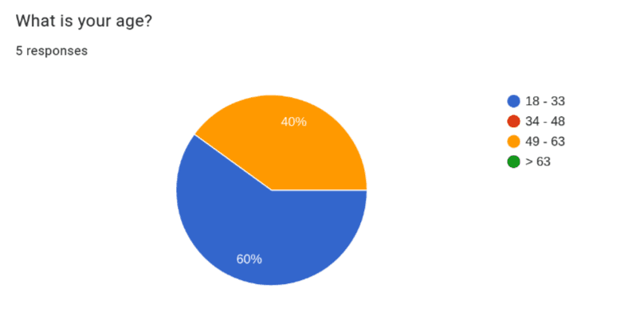
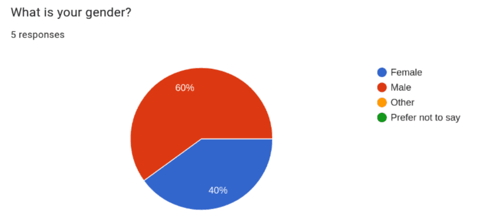
Lastly, I couldn't find any information on how education level correlates to number of subscriptions but I thought it was important to collect. This was because I interviewed many college students since they are the most available to me to interview. This makes my interview pool highly skewed in favor of people with or in the progress of getting a college degree. I felt it was important to disclose this as it may affect how representable the interview pool is.
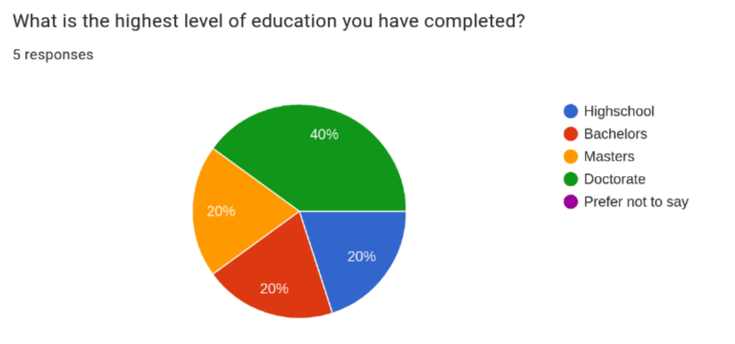
Interview Questions
Below are the questions I asked in each interview. Some of these questions can technically be answered with a simple yes no so I made sure to ask follow up questions if needed so they would describe the specifics behind their answer such as why they would not read an entire EULA.
- Do find some interfaces annoying? if so, what's an example?
- Do you have any subscriptions? if so, what's are some examples?
- Have you every encountered issues while canceling a subscription?
- If there was an app that would walk you through canceling a subscription would you use it?
- How would you describe your tolerance for ads on websites?
- Have you ever needed to lookup how to cancel a subscription?
- Have you ever read a EULA?
- Have you ever felt you weren't informed about an important part of the EULA? if so, what's an example?
- Do you know someone who you think would have difficulty canceling a subscription?
Empathy Maps
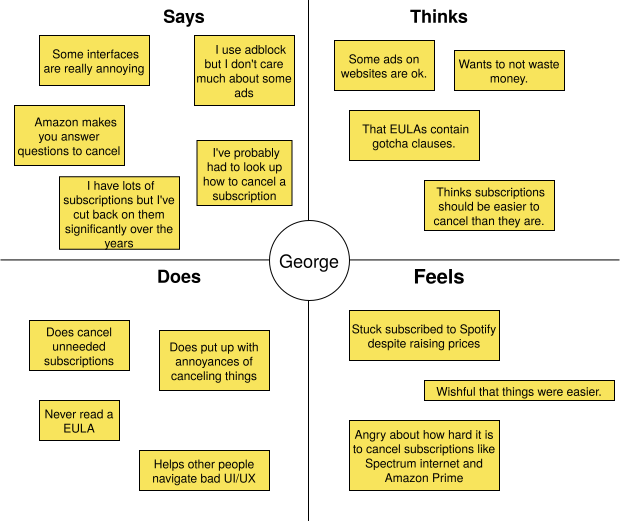
- Pains
- Jumping through hoops to unsubscribe from things.
- Raising prices.
- Gains
- Not wasting money.
- Happy to help people navigate bad UIs.
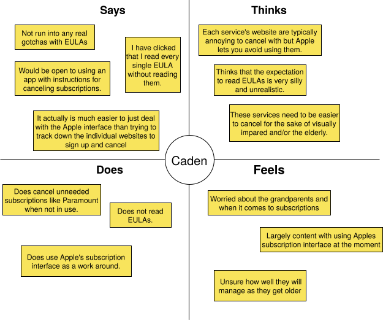
- Pains
- The local newspaper website is very hard to use.
- Unsubscribing on websites is hard for him.
- Gains
- Likes Apple products a lot.
- Likes dealing with subscriptions through apple so he can skip using individual websites.
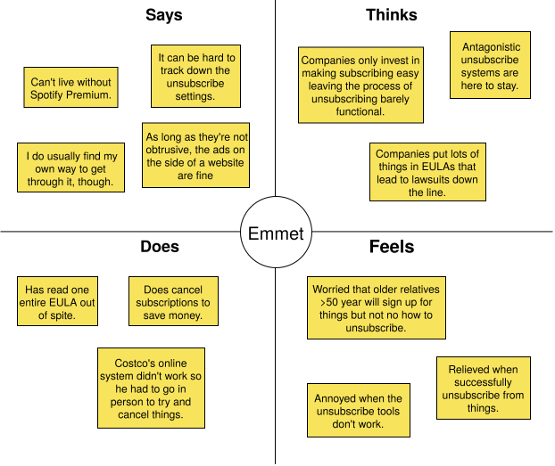
- Pains
- Going in person to cancel subscriptions is annoying.
- Doesn't like having too many apps.
- Gains
- Happy to save money by canceling subscriptions.
- Enjoys the small things like how the placement of advertisements on websites can be very funny.
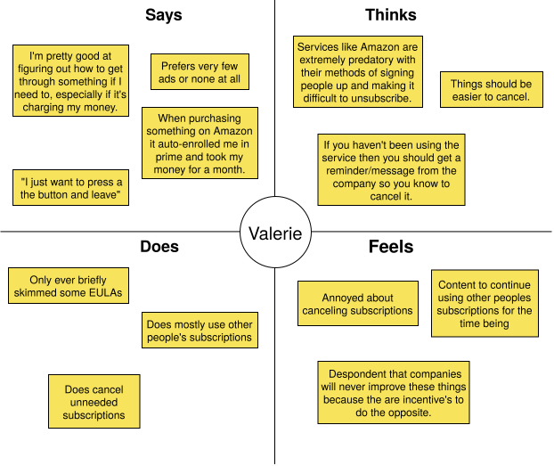
- Pains
- Doesn't like auto-signup subscriptions.
- Doesn't like the though of subscriptions taking money even when you don't interact with the service for an extended period of time.
- Gains
- Likes as few advertisements as possible.
- Likes that if you use other peoples subscriptions you don't have to worry about.
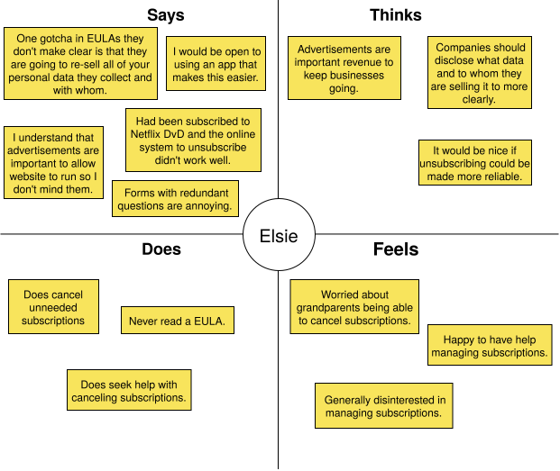
- Pains
- Mailing things to cancel subscriptions is annoying.
- Having user data sold to third parties without informed knowledge.
- Gains
- Likes to get other people for help.
- Likes to not pay for unneeded subscriptions.
Conclusion
Looking over the interviews and empathy maps I've come up with the following key insights:
- Most people would be open to using a website that helps unsubscribe from things as long as it actually saves time in the end to have to go to this extra website.
- Some people have reported that they have resorted to getting help unsubscribing from something from things from various sources.
- No one really reads EULAs but sometimes they would like to know some of its terms like what they do with your user data so you are more informed about what you are signing up for.
- People are indeed motivated to cancel unneeded subscriptions despite the often difficulty of doing so because it saves them money.
- Most people had at least one especially bad experience canceling a subscription where money was or was almost lost and the process was frustrating.
- Unsubscribing often isn't easy and is sometimes even broken.
- Everything thinks that their grandparents/elderly people (> 60) will struggle a lot with canceling subscriptions.
- Everyone would like it if unsubscribing was easier but companies have the complete opposite incentive.
What surprised me the most but in retrospect is very obvious was that while this website may help, people are already very sufficiently motivated to figure out unsubscribing because it saves them money. Meaning, that a lot of people will figure out how to unsubscribe even if it takes them a while to wade through whatever antagonistic/broken UI is thrown their way. What this website I'm proposing would need to do then to help users that would have figured it out eventually is to have unparalleled ease of use and searchability in order to actually save them time.
One way you could try making it save more time is that instead of being a separate website with screenshoted steps of what you need to do I could instead provide a browser extension. The extension could walk you through the UI of the actual unsubscribe webpage by just pointing to the next button to press. This would counteract any dark patterns in the most literal way possible by turning them into light patterns.
The other use of the website, to provide EULA gotchas still seems applicable to all users no matter their ability to eventually unsubscribe because no one really reads EULAs.
Lastly, It didn't seem like the older people I interviewed (ages 49 - 63) had significantly more issues than the younger group but both were more open to external resources like getting help from other people or tools to deal with unsubscribing (Apple). This indicates that people in the 49 - 63 age range might be more open to using the website I'm proposing than the younger group which seemed more willing to take on unsubscribing unassisted.
Stage 2: Define
Persona
For the persona, I decided it represents someone with at least 3 subscriptions. This is because people in the interviews were very conscious of money wasted by unused subscriptions and the more subscriptions likely the more they have to occasionally cancel.
For the age, younger people might have more subscriptions necessitating more unsubscribing when they aren't in use but older people seems to be more open to using external tools for assistance so I decided to pick 40 years old. This is because while I didn't interview a 40 year old it is in the middle between the young and older interviewees to hopefully strike a balance between people with more subscriptions and those that would be more open to using a website for assistance.
For the rest of the fields about story and attitudes I filled them in based on similar experiences and attitudes found in the empathy maps and interviews. In particular, in the story section I included a bad experience with a subscription just like how most interviewees had one really bad experience with subscriptions.
Page 1:

Page 2:

Business Model Canvas
For the business model I extrapolated sources of costs a website like this would need to pay such as webhosting and keeping the information up to date as subscriptions change. I also brainstormed some potential revenue streams such as advertisements made on the website and a generous free tier for the number subscriptions you can unsubscribe from using the extension followed by a pay as you go model. I think this strikes a good freemium model that will work well with the likely money conscious users making use of this website and extension.
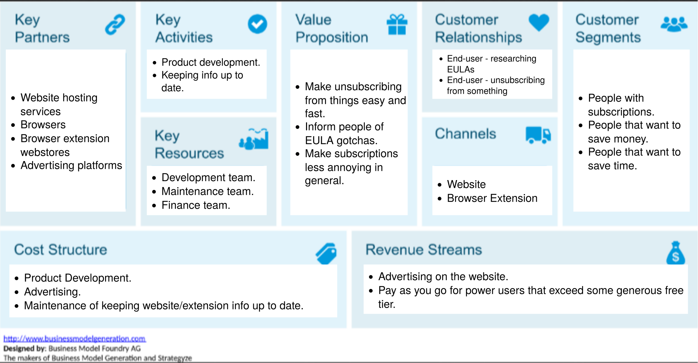
Conclusion
In summary, the app will target the persona of a consumers with 3 or more subscriptions, who are money conscious enough to want to unsubscribe from subscriptions not in use and or who want to be alerted to gotchas in EULAs. This website aims to help these people by reducing the time and frustration associated with these two types of tasks. For some people it may even mean saving some money if they weren't going to cancel a subscription without assistance.
The business plan for making this financial viable is a freemium model. Its important that we provide generous free with ads material so we won't turn away our target user because they are money conscious.
Stage 3: Ideate
Mind Map
For ideation I elected to use a mind map. This is because I have used mind maps in the past to great success for arranging my thoughts on complex topics while studying. I have however not used them specifically for brainstorming ideas so I though it would be interesting to try mind mapping out in this new setting.
Like with mind maps I've previously created, I built this mind map within Obsidian's canvas. This let me color connections like a green arrow between canceling subscriptions and money indicating that canceling subscriptions saves you money. I used red however to indicate a more bad relationship like how frustration is red and so is all connections into it. It also let me insert images, including some stock images from pixabay. I used these images to add emphasis like representing EULAs with an image of a large stack of paper or frustration with a frustrated looking person. After starting with the unsubscribe website, and then the two main uses cases of the unsubscribe assistant and EULA gotchas I began to come up with a few new ideas for connections. One of these was why limit the browser extension to just housing the unsubscribe assistant when it could also provide access to EULA gotchas information.
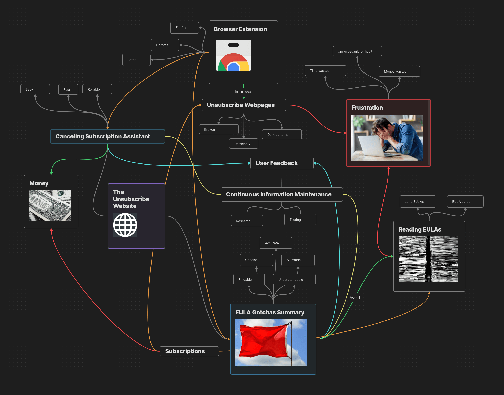
Conclusion
I came into ideation a bit skeptical as to whether I would come up with anything novel but the exercise did help me come up with a few additional ideas below:
Firstly, I realized that the browser extension could, in addition to housing the unsubscribe assistant tool, show you EULA gotchas when you go to a page to sign up for a subscription. This way you don't even have to leave the subscription's signup page to be presented with any noteworthy information about the service's EULA. I think it would still be worthwhile to make the EULA gotcha summaries available on the unsubscribe website itself but this opens up another convenient use case of having the extensions installed.
Another thing I realized is really important is user feedback. The reason for this is because while we can try to keep information updated as best we can, any one of the subscriptions we have information on could change that information at any moment so we will always be fighting an uphill battle to stay accurate. Thus, its important that users are able to flag something as suspect so we can respond to it more rapidly. Take Amazon for example. If one day they change their unsubscribe page breaking the unsubscribe assistant without us knowing then users need an easy to report that their is a problem. This also goes for the EULA gotchas which will change as companies change their EULAs.
Adding these two new ideas into the extension and website will further enhance its value to users, making it an even more useful tool for helping make subscriptions easier to work with.
Stage 4: Prototype
Low-Fidelity Prototype
The low fidelity prototypes are all about getting out ideas and seeing them take some form to explore them.
For the extension, I sketched out several pages because it contains the most functionality. During this time I came up with some potential settings for it to allow users to tune its behavior to their liking. I also came up with the idea of showing the user the list of subscriptions provided by the current website they are on as another way to search subscriptions.
The website, is considerably simpler needing only to present EULA gotcha information and have a button to open the extension and start unsubscribing. This means it has a larger version of the subscription view and search pages found in the extension.
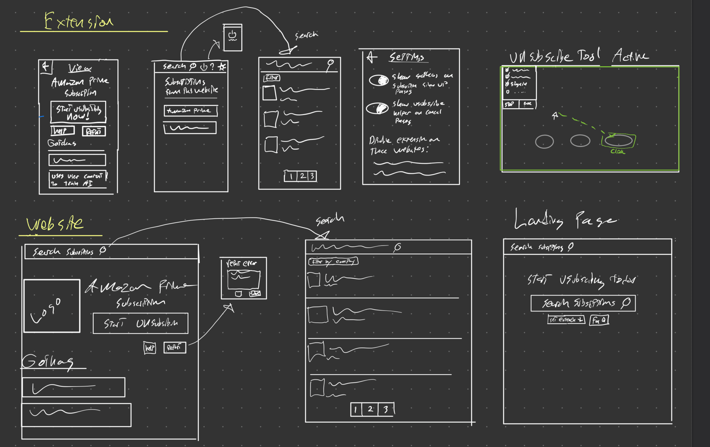
High-Fidelity Prototype
For creating the high fidelity prototype I opted to use Figma because I had heard it was good and found it quite intuitive after trying it for the first time. There are two parts to the unsubscribe website, the extension and the actual website. For both the website and the extension I picked a middle ground monitor size. The extension itself though only takes up a smaller section as is typical with browser extensions to not take over your entire screen. From there, I created the various pages of the prototype and linked them together using Figma's prototype tools. You can check out my high fidelity prototype on Figma below.
There are three main entry points to the prototype:
Nielsen Useability Heuristics
1. Visibility of System Status
In order to keep the user informed about what is going on when they disable the extension, I color coded the power button icon and hid away the extension interface when disabled. This will clearly indicate to users that the extension is actively scanning the websites you visit or is instead disabled. Another area where the user needs to informed of the status is when the unsubscribe assistant is active. I opted to make this very obvious to the user by using a dashed green outline.
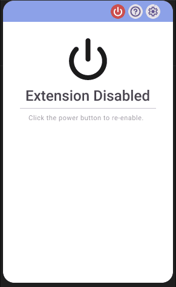
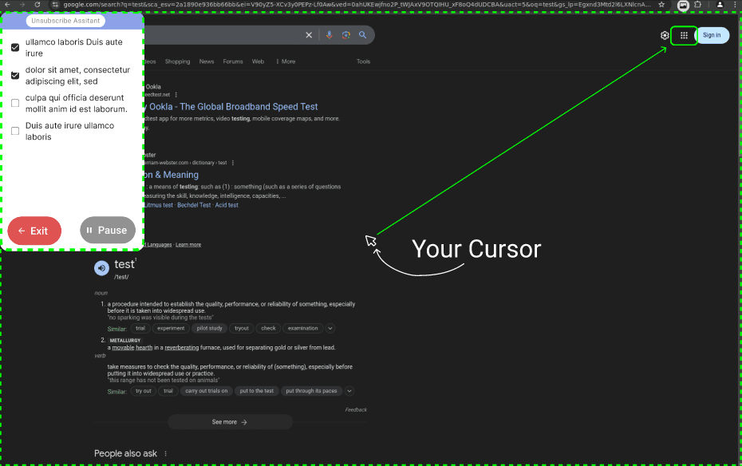
2. Match between system and real world
I make use of many icons that have real world counterparts to make the app more readable. These include a Setting Cog icon which is a gear, a search icon that looks like a magnifying glass, and a flag icon for making reports. By using icons with real world counterparts the app will be more understandable to the average user at a glance.
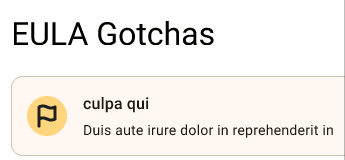
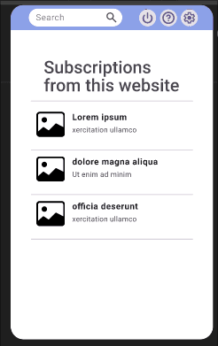
3. User Control and Freedom
To make users feel more in control whenever there is a sub menu of some kind I allow the user to go back using a back button. The submit a report dialogue also has a cancel button. Lastly, the subscribe tool has a big red exit button so you can freely disable it at any moment.
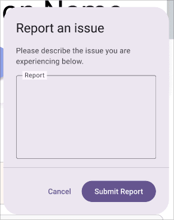
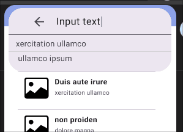
4. Consistency and Standards
Users expect this app to work similarly to other apps so to meet user expectations we use the standard Martial Design tool kit which is used to build many apps. Additionally, for the website we have themed it after social media profiles to show the subscriptions but with our unsubscribe button instead of a follow/un-follow button. This allows users to draw on what they are familiar with to make this app easier to use.
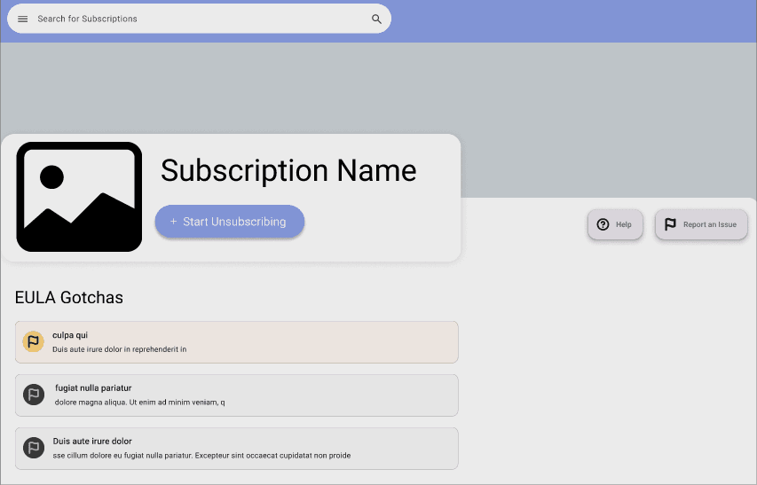
Social Media Profile Inspired Design
5. Error Prevention
If the user tries to submit an empty feedback form we can alert them that it must contain something. This could help a user that might have mistakenly forgotten to add the report before submitting.
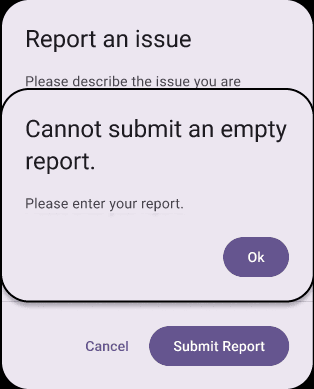
6. Recognition Rather than Recall
To help remind the user of what they have search before or common auto completes this information is saved for you and provided as auto complete options when users try to search for things. Having these shown will reduce the cognitive load needed to use search within this app.
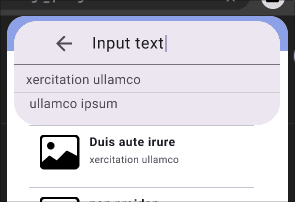
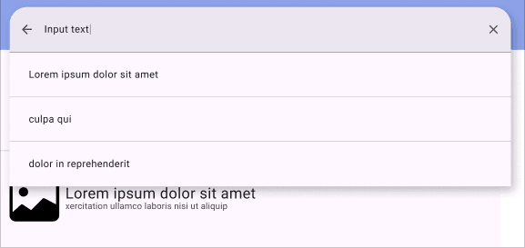
7. Flexibility and Efficiency of Use
In order to support more ways of using this application the EULA gotchas are viewable both within the extension and on the website. This allows users on mobile or that don't want to install a browser extension to still get some use out of this app.
EULA gotchas can be found within the website.
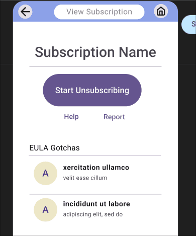
EULA gotchas can be found within the extension.
8. Aesthetic and Minimalist Design
I designed the pages to provide only what the user might need so they are minimalist instead of cluttered. Take for example the page you are presented when you open the extension. It shows the option to search, and suggestions of subscriptions associated with the website you are currently on. All other settings and functionality is tucked using the buttons along the top. Additionally, it uses nice logos for the subscriptions to be more aesthetic.
9. Help users recognize, diagnose, and Recover from Errors
To help users resolve errors we tell users that no subscription could be found if they search for something that doesn't exist to they know to try searching for something else. This way users know that it isn't just taking a long time for the results to load.
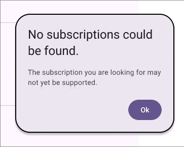
10. Help and Documentation
Users may seek help documentation to better understand how to use this extension and website. To facilitate this, there is help/FAQ buttons in the extension and website so users can always easily click to learn more if needed.
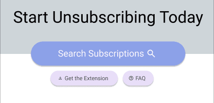
UX Design Laws
The 3 design laws below were used to elevate the user experience within the prototype.
Fitts Law
As we found out in interviews, we expect some of the users to be sufficiently motivated to unsubscribe even if it takes them a while. To provide the most benefit to these users the speed of unsubscribing must be very fast. For this, I chose to use Fitts Law throughout the design to make the time to click through menus faster. This was done by having the unsubscribe button as well as any other likely to be used buttons kept very large and easy to click.
Cognitive Load
As was also found in interviews, we expect users to value their time and to potentially be frustrated. For the reason I want this app to very simple to use in order to allow these users to relax and unsubscribe with ease. For this reason I kept the the number of pages small and every page has a clear purpose and way of navigating so it takes as little cognitive load as possible.
Von Restorff Effect
Over on the EULA gotcha side of this application I elected to use the Von Restorff Effect to distinguish EULA gotchas. Gotchas of varying severity are color coded to help users at a glance tell what kind of gotchas a subscriptions EULA has. This allows for users prioritize reading the more important EULA gotchas saving time when needed.
Stage 5: Validation
Background Summary
Next I performed Usability Testing on 5 people to determine how well users are able to use my app to help identify any problems with it. For this stage I attempted to get the same or similar 5 people as before because those people had been already selected as my desired users this app is being built for. I then recorded the screens of these people in person using OBS (Open Broadcaster Software) as they attempted to complete various tasks within this unsubscribe app. From these videos I created various metrics about how well they performed those tasks within the app to identify potential weaknesses. I also collected both a demographics survey and a post testing SUS (System Usability Scale) surveys using Google Forms. These tests where performed during Nov 24th-30th 2024 and all tests were done in person.
Methodology
Testee Selection
As stated above, my selection criteria for people hasn't changed from stage 1 so I tried meeting with the same people. I succeeded in meeting with 3/5 of the original people and met with 1 new person to get to 4. For the last person I tried to continue following the same reasoning used in stage one that that men had a slight edge in having more subscriptions and while younger people may have more subscriptions older people may benefit more from having a tool to help with unsubscribing.
Unfortunately I was unable to meet with a 5 person because this was scheduled over a holiday which made meeting with people very difficult.
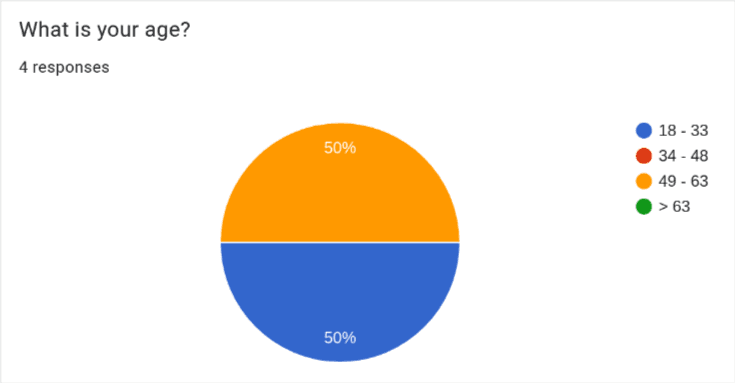
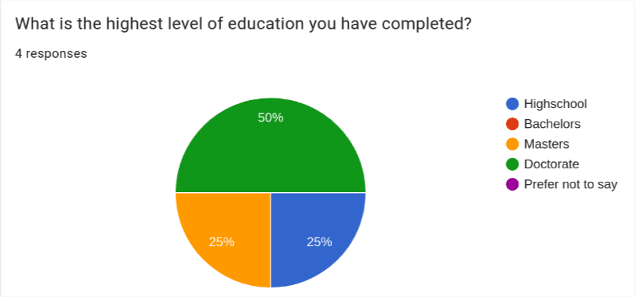
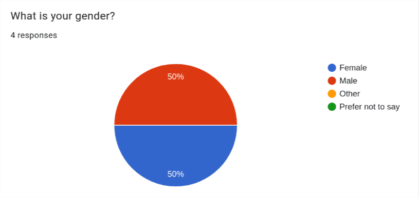
Tasks
The following tasks are provided on a piece of paper for the users to read from to minimize priming. They can then ask questions before starting to perform the task.
- Use the The Unsubscribe Website to find the EULA gotcha summary of a subscription you are considering getting.
- Make a report about incorrect information in the EULA gotcha.
- Use the unsubscribe tool to unsubscribe from the XXX subscription.
- Disable the extension on a specific website by adding it to the extensions disabled websites list.
- Look for help about the current page you are viewing.
Data Collected
I wanted to get as much information as possible so I compiled several information sources described below:
- Demographics Survey - Taken to know background info about users. Results are shown above.
- Task Completion Metrics - Record User Performing Tasks to
collect the following for each task:
- Clicks Taken
- Time Taken
- SUS Scores - As a post-usability testing survey I had participants fill out the ISO standard System Usability Scale (SUS) to get a comprehensive measure of their subjective thoughts on the usability of the app. This provides a more qualitative view of the usability as reported by the users which can be compared to the typical scores of other good apps to see how well this app fares in terms of usability subjectively.
Results
First we have the task completion performance by participants in the form of seconds taken and clicks taken to complete tasks. For these I plotted the averages and standard deviations for the Clicks and Seconds taken per task.
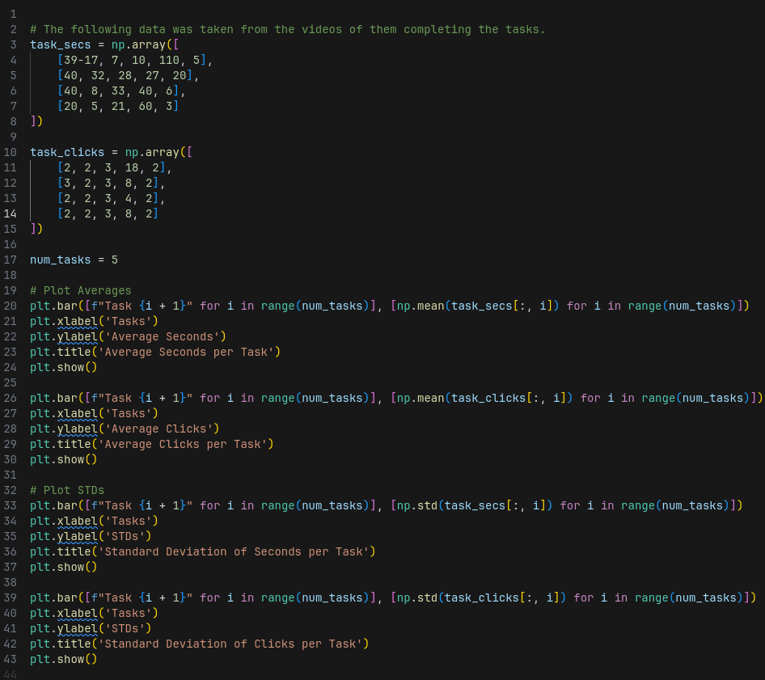
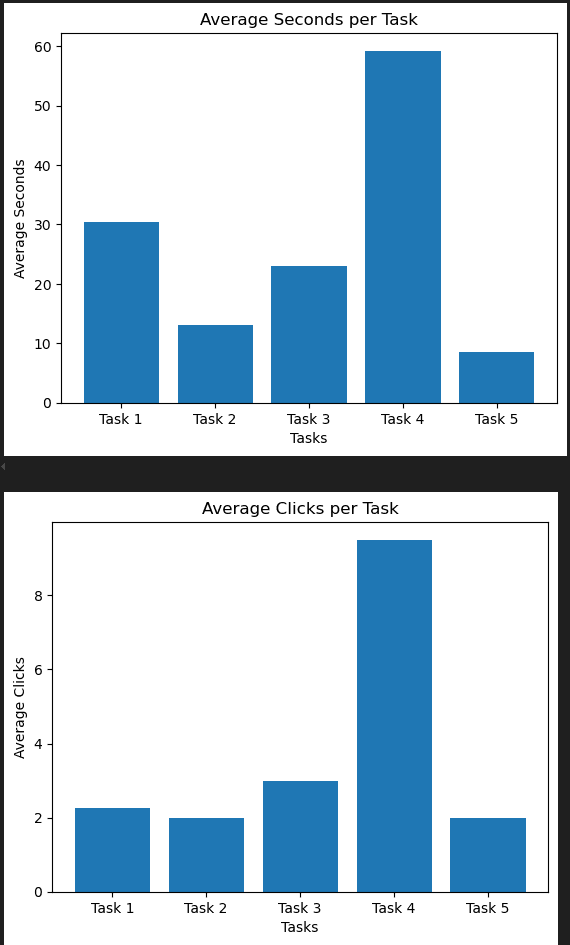
Averages per Task
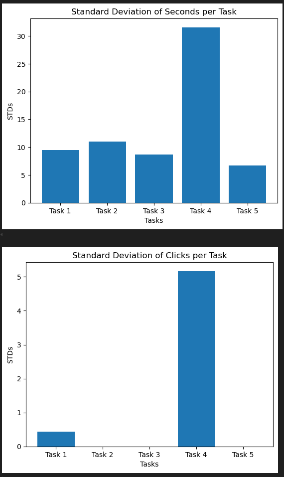
Standard Deviations per Task
Then we generate the SUS scores from the google form participants filled out after completing the tasks. I plotted these per participants as well as provide the average and standard deviation of the score.
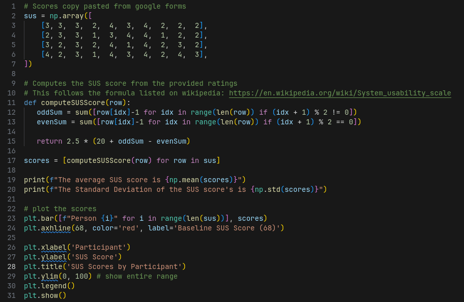
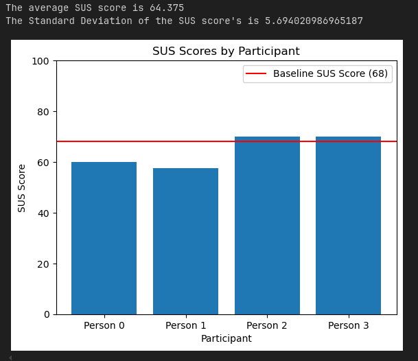
Findings and Recommendations
Starting with task completion performance, participants where able to complete most tasks in close to the minimum number of clicks. They were also very consistent about this with the standard deviation of clicks for tasks 2, 3, and 5 being zero. This seems to indicate that at least the tasks that were picked, users were able to perform well at.
However, there was one task that had issues revealed in the data. Task 4 took some people much longer to complete and it took many more clicks. The reason I think this anomaly happened mostly comes down to the order in which tasks were done. If you followed the instructions then you would be on the subscription view page of the extension which doesn't show a settings cog, the idea being to keep the interface of this submenu within the extension less cluttered. Stage 4 requires that you enter the settings menu so you have to first navigate to the home page from the subscription view page of the extension to reach the settings cog. The problem is that at that point in time, users had never seen the home menu so they would have no way of knowing they needed to do that. If this issue persists with further improved test ordering that first introduce users to the home menu of the extension where the settings cog is visible then it may be worth reworking the subscription view page to incorporate the settings cog. In some respect I think task 4 being somewhat harder is ok because this is a more niche feature that you won't need to interact with often.
Moving onto the SUS scores, the SUS scores provide a subjective report of what the users thought of the usability. The average score found across 100s of studies is 68 so if we can get close to at least 68 that means our app is at least close to the usability of the average app (MeasuringU). In our case our average SUS score was 64.8 which is close but falls a bit short of 68. This means the unsubscribe application is perceived as having a slightly less than average usability by users. For future research it would be good to test that if the tasks are ordered better so task 4 wasn't so difficult if that alone would be enough to boost the SUS score to reach 68. This shows that there is room for improvment to increase the percieved usability. Afterall, Apple is notorious for making less usable apps where the task performance metrics would be worse but the percieved usability is greater by making heavy use of the aesthetic usability affect. For a lot of software, including the unsubscribe app that aims to be very easy to use because it users may be already frustrated by trying to unsubscribe the perceived usability is very important.